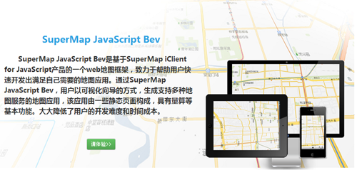
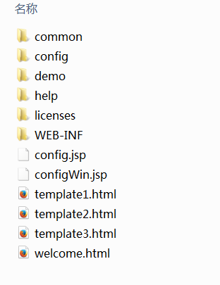
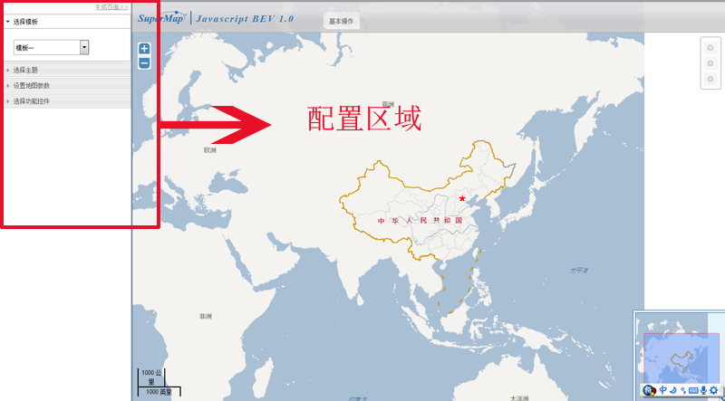
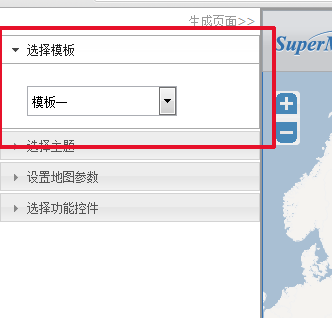
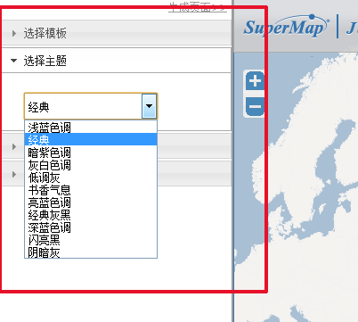
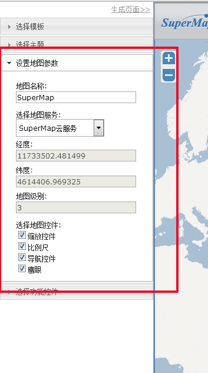
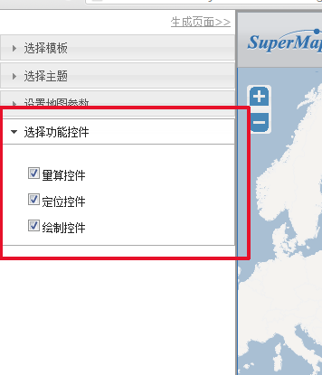
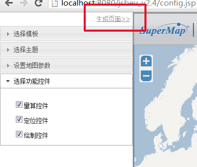

一、简介

SuperMap JavaScript Bev是基于SuperMap iClient for JavaScript产品的一个web地图框架， 致力于帮助用户快速开发出满足自己需要的地图应用。通过SuperMap JavaScript Bev，用户以可视化向导的方式， 生成支持多种地图服务的地图应用，该应用由一些静态页面构成，具有量算等基本功能。 大大降低了用户的开发难度和时间成本。
产品定位
- 快速搭建地图应用。
- 为中小项目提供基本的前端地图框架，降低项目的开发难度和时间成本。
产品特点
- 可视化向导，无编码的开发方式，简单易用。
- 多模板支持，满足用户对页面布局的不同需要，并可扩展。
- 多样的地图服务，目前支持iServer、SuperMap云地图、ArcGIS、百度、天地图等地图服务。
- 页面自适应，跨浏览器，兼容性强。
- 轻量级。
- 可扩展性。
- 产品开源，存放于Git库中。
二、安装指南
- 下载SuperMapJavaScript Bev。
- 解压缩 zip 包并拷贝到发布目录，可以拷贝到iServer的webapps目录或tomcat的发布目录。
- 浏览器下访问bev根目录下的welcome.html
- 根据可视化向导完成整个地图页面的搭建。
三、目录说明

- common
此文件夹下面存放的是这个项目公用的一些文件，比如说jquery.js - config
此文件夹下存放的是配置页面中的配置工具的源码，以及配置文件- config.json 配置文件，用于定义配置工具中的配置选项
- demo
此文件夹存放的是项目所用到的css文件、js文件，它包含六个文件夹， 分别为：css、img、js、libs、theme和utthemes- css 项目的css样式文件
- img 存放图标文件
- js 包含bev控件js文件，jquery ui控件js文件等
- libs 存放的是iclient for javascript类库
- theme 存放的是iclient for javascript主题文件
- uithemes 存放的是jquery ui的主题文件
- help
此文件夹存放的是api文档、使用文档、开发文档和配置文档，以及文档相关的图片 - licenses
此文件夹存放的是licenses文件 - WEB-INF
此文件夹下为项目文件 - config.jsp
这个是bev的配置页面 - configWin.jsp
这个是要嵌入到配置页面里面去的模板文件页面 - template1.html
配置模板一时所要引用的文件 - template2.html
配置模板二时所要引用的文件 - template3.html
配置模板三时所要引用的文件 - welcome.html
bev的欢迎页面，在这里点击"请体验"按钮即可进入到配置页
四、使用说明
1、欢迎页(welcome.html)
2、点击"请体验"按钮进入配置页

配置页分为左右两侧，左侧为配置区域，右侧为地图浏览区域，当修改配置选项时，右侧地图会实时的更新。
3、选择模板和主题
配置面板的第一项为“选择模板”，目前我们提供了三个模板供用户选择。

配置面板的第二项为“选择主题”，目前我们提供了很多主题供用户选择，用户可以选择自己喜欢的主题。

4、设置地图参数
配置面板的第三项为“设置地图参数”，这里我们可以设置项目的标题、地图服务、经度、纬度、级别以及地图控件。

5、选择功能控件
配置面板的最后一项为“选择功能控件”，这里我们可以选择添加一些功能。目前只提供了量算、定位、绘制等基本功能。

6、生成页面
以上参数都修改好以后，点击顶部的“生成页面”按钮，即可在bev的根目录下生成一个“index.html”文件，并将浏览器重定向到该页面。
